3.3. Dibujar
Esta app introduce el componente Canvas para crear gráficos sencillos de dos dimensiones (2D). Vas a construir un Paint, una aplicación que permite al
usuario dibujar en la pantalla en diferentes colores, y también le permitiera poner una imagen ya existente y dibujar el sobre ella.
Diseño de los componentes
Vamos a utilizar estos componentes para hacer la aplicación:
- Tres botones para seleccionar los componentes de pintura rojo, azul y verde. Y un componente DisposiciónHorizontal para organizarlos.
- Un componente Deslizador del bloque Interfaz de usuario. Nos permite modificar el valor numérico de un parámetro sin tener que escribirlo. Lo utilizaremos para fijar el grosor del pincel.
- Un componente Canvas, que es la superficie de dibujo.
- Dos botones, uno para Guardar y otro para limpiar el dibujo. Y un componente DisposiciónHorizontal para organizarlos.
- Un componente Etiqueta, que llamaremos Nombre_Archivo, a la derecha del botón Guardar,
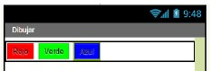
Una vez dentro, cambiaremos el nombre de la pantalla Screen1 por Dibujar ( en la propiedad Título del componente Screen1 ).
ATENCIÓN
Es importante siempre utilizar nombres descriptivos para los objetos que vamos creando. Al principio, cuando nuestras aplicaciones son pequeñas, es fácil recordar cada objeto, pero a medida que los programas van haciéndose más complejos es fundamental saber para qué sirve cada objeto, cada variable, y sólo podremos hacerlo si le hemos dado un nombre que describe qué es o para qué sirve.
En el Lienzo vamos a definir que su anchura (propiedad Ancho) sea automática, para que se extienda hasta los bordes izquierdo y derecho del Visor. En cuanto a su altura, mejor experimentar con diferentes tamaños hasta que ocupe el espacio que queremos.
El tamaño se especifica en pixels, es decir, en puntos de la pantalla. Cada línea de la pantalla tiene un número de pixels. El número de ellos que haya, en líneas y columnas, define la resolución de la pantalla. Podemos probar con 300 pixels, y modificarlo más tarde si vemos que no es el mejor tamaño.
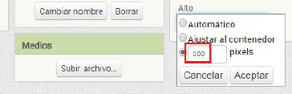
Bloques
Ahora vamos a definir el comportamiento del programa, a decir cómo tiene que funcionar. Vamos entonces al editor de bloques.
Añadir el evento táctil para dibujar círculos
Arrastraremos el bloque cuando.Lienzo1.Tocar desde el cajón del objeto Lienzo1 hasta el editor. Esto indica que cada vez que toquemos el lienzo con el dedo tendrá que ocurrir lo que digamos dentro de este bloque mostaza.
Ahora arrastraremos el bloque morado (de acción) llamar.Lienzo1.DibujarCírculo hasta encajarlo dentro del bloque mostaza. Observa que existen componentes para dibujar líneas, puntos, círculos, etc. Veremos que para funcionar necesita que le asociemos a la derecha tres bloques de información adicional (x, y, r).
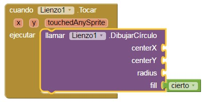
Vamos a utilizar el sistema de Coordenadas Cartesianas para referirnos a un punto cualquiera dentro de nuestro Lienzo1. Siempre que toquemos con el dedo dentro del lienzo, el bloque mostaza guardará cuál es el valor de la coordenada x y la coordenada y del punto que estamos tocando, porque seguro que lo necesitaremos. App Inventor utiliza el sistema cartesiano para determinar la posición de un punto determinado dentro de un lienzo. La x aumenta desde la izquierda a la derecha, y la y lo hace desde arriba hacia abajo.
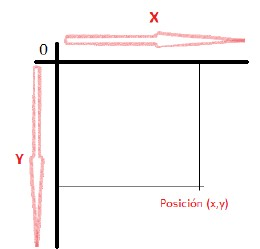
Precisamente para saber dónde dibujar el círculo, el bloque morado deberá saber que saber qué x e y tiene el punto de la pantalla que estamos tocando. Lo tomaremos del bloque mostaza.
Al dejar quieto el puntero del ratón sobre el icono de la x del bloque mostaza nos saldrá una ventanita en la que aparecerá un pequeño bloque tomarx de color naranja. Tenemos que arrastrarlo hasta encajarlo con el hueco superior del bloque morado llamar.Lienzo1.DibujarCírculo
Haremos lo mismo con la y . Esto hará que el círculo se dibuje sobre la x y la y que estamos tocando, y no en cualquier otro punto de la pantalla.
Nos falta definir el radio . Para definir el tamaño del radio, abrir el cajón Matemáticas de la zona de bloques y arrastrar el bloque azul que indicar el valor 0 (cero) hasta el hueco radius de nuestro bloque morado.
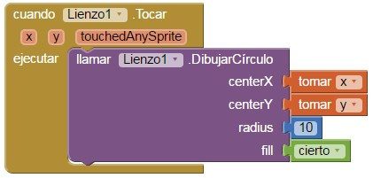
Queremos que los círculos se vean bien, así que le asignaremos a r el valor 10. El radio del círculo será 10.
Agregar controladores de eventos de botones
Ahora podemos tocar dentro del lienzo, en la pantalla del móvil o el emulador, para ver cómo se dibujan pequeños círculos. Pero para que los círculos sean rojos, verdes o azules en lugar de negros, hay que decirle al móvil que lo haga creando nuevos bloques. Hay que utilizar un bloque mostaza del objeto botón_rojo. Ya hemos usado este tipo de bloque mostaza en el programa del gato.
Utilizaremos el bloque cuando.boton_rojo.Clic. Lo arrastramos hasta el editor de bloques. Y dentro colocamos el componente de Lienzoponer.Lienzo1.ColorDePintura.como.
Falta indicar que queremos que sea el color rojo. Para ello escogeremos el pequeño bloque que identifica a este color de entre los colores que hay en el cajón Colores de la Paleta de App Inventor.
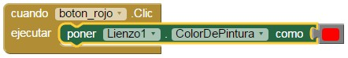
Haremos lo mismo con los botones para color verde y color azul. Lo mejor es hacerlo duplicando el bloque mostaza que hemos creado para el color rojo. Una vez hecho, en el nuevo bloque mostaza, podemos desplegar la lista del nombre de los botones y elegir el del color verde. Entonces sólo tendremos que cambiar el bloque rojo por el verde, y listo. Lo mismo con el botón para el azul.
Cuando probemos el resultado se nos “ensuciará” el lienzo enseguida, así que hay que poner un botón para dejar el lienzo en blanco de nuevo.
- Crear DisposiciónHorizontal1 debajo del lienzo
- Meter dentro un nuevo botón y llamarlo Limpiar
- Cambiar el texto del botón por “Limpiar”
- Poner los bloques para que al hacer clic sobre Limpiar se limpie el lienzo
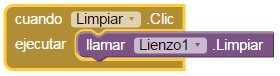
Dibujar líneas
Para dibujar una línea hace falta especificar el punto inicial de la línea y el punto final. Por ello para usar este bloque hay que indicarle dos
coordenadas x y dos y. El primer (x1, y1) define el punto inicial de la línea, y el segundo par (x2, y2) define el punto final de la misma. Al hacer clic sobre el lienzo, sin levantar el dedo, el programa guardará en su memoria el valor de la x e y del punto que hemos tocado (determinado por XPrevio e YPrevio). Según vayamos deslizando el dedo el programa irá detectando el cambio de posición y dibujará una línea desde ese punto guardado hasta el punto que estamos tocando actualmente (determinado por XActual e YActual). Esto se repetirá todo el tiempo, muy rápidamente, mientras sigamos arrastrando el dedo por la pantalla. Se dibujarán por lo tanto muchas líneas muy cortas, una detrás de la otra, dando la sensación de ser una única línea continua.
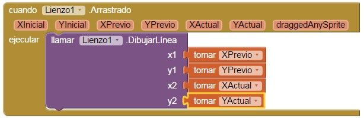
Cambiar el tamaño del pincel con un Deslizador
Un objeto Deslizador es perfecto para modificar el valor numérico de un parámetro sintener que escribirlo. Para incluir un deslizador en nuestro interfaz de usuario tenemos que arrastrarlo desde la Paleta. En nuestro caso lo llamaremos Tamaño_pincel.
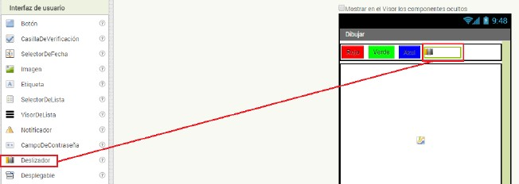
Tenemos que definir el ValorMínimo (1) y ValorMáximo (10) que podrá tomar el deslizador, y el valor que tendrá inicialmente, PosiciónDelPulgar (5). También es conveniente especificar la anchura del Slider para que se ajuste al espacio restante (Ajustar al contenedor).
Tenemos que indicarle ahora a nuestro programa que modifique el ancho de la línea de nuestro dibujo según variemos la posición de Tamaño_pincel. Para ello, utilizaremos el bloque mostaza cuando.Tamaño.pincel.PosiciónCambiada , que se ejecuta cada vez que se cambia la posición del selector dentro del deslizador.
Si dejamos momentáneamente el puntero del ratón sobre la casilla posiciónDelPulgar del bloque mostaza, se mostrará un desplegable que nos permitirá elegir el bloque que define el valor de esa variable (tomar , o definir un nuevo valor para ella (poner . Elegiremos en este caso el bloque tomar , y lo combinaremos con el bloque verde del objeto Lienzo que define el ancho de línea de dibujo, para indicar al programa que cambie el ancho de la línea cada vez que arrastremos el puntero del deslizador Tamaño_pincel a un nueva posición.
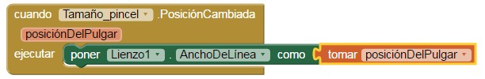
Guardar un archivo con el dibujo que hemos hecho
Cuando el usuario termine de hacer un dibujo interesante, seguramente querrá conservarlo en la memoria permanente del teléfono. Para ofrecerle esa posibilidad, tendremos que indicarle a nuestro programa cómo almacenar en la memoria el contenido actual del lienzo. En primer lugar, hay que incluir en el interfaz un botón Guardar , que al ser pulsado ejecutará el código correspondiente.
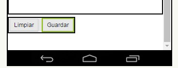
El bloque de código que usaremos, incluido dentro del cajón Lienzo, será llamar.Lienzo1.Guardar.
Este bloque es diferente a los vistos hasta ahora, porque no puede ser encajado directamente debajo de otro bloque, o dentro de un bloque color mostaza. El bloque tiene que ser encajado a otro por su izquierda. Esto se debe a que es un bloque que devuelve un valor, como acabamos de ver al final del apartado anterior, con el bloque de color verde claro Lienzo1.AnchoDeLínea. En este caso el bloque violeta devuelve una texto, que contiene el nombre del archivo donde se ha almacenado el dibujo dentro de la memoria del dispositivo.
Es conveniente colocar un componente Etiqueta, que llamaremos Nombre_Archivo, a la derecha del botón Guardar, y que tomará el valor de texto devuelto por el procedimiento Lienzo1.Guardar. Definiremos que su propiedad Textoestéinicialmente en blanco. El componente será difícil de ver en el dispositivo mientras no le asignemos un nuevo valor.
Cada vez que se pulse el botón Guardar , el dibujo quedará almacenado con un nombre que se asignará automáticamente, en función del día y la hora. Este nombre aparecerá en el texto de la etiqueta Nombre_archivo cada vez que hagamos clic en el botón Guardar .
Actividad
- Personaliza el lienzo con una imagen de fondo.
- Realiza los cambios oportunos para almacenar el dibujo en un fichero con el nombre que nosotros le asignemos. Debes añadir un CampoDeTexto.
- Imagina que deseamos conseguir una tonalidad de color rojo determinada. ¿Cómo la podemos poner sabiendo su código de color RGB en App Inventor? Haz la prueba construyendo un color rojo personalizado.
- Incorpora un nuevo botón que utilizando el componente Cámara (bloque Medios) permita tomar una foto con el dispositivo móvil y establecerla como fondo del lienzo.Al pulsar el botón Limpiar debe aparecer la imagen que tienes por defecto en el lienzo.
Obra publicada con Licencia Creative Commons Reconocimiento Compartir igual 4.0